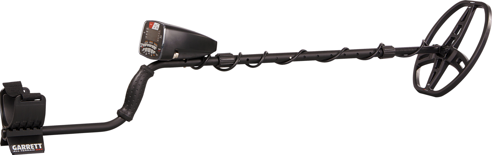
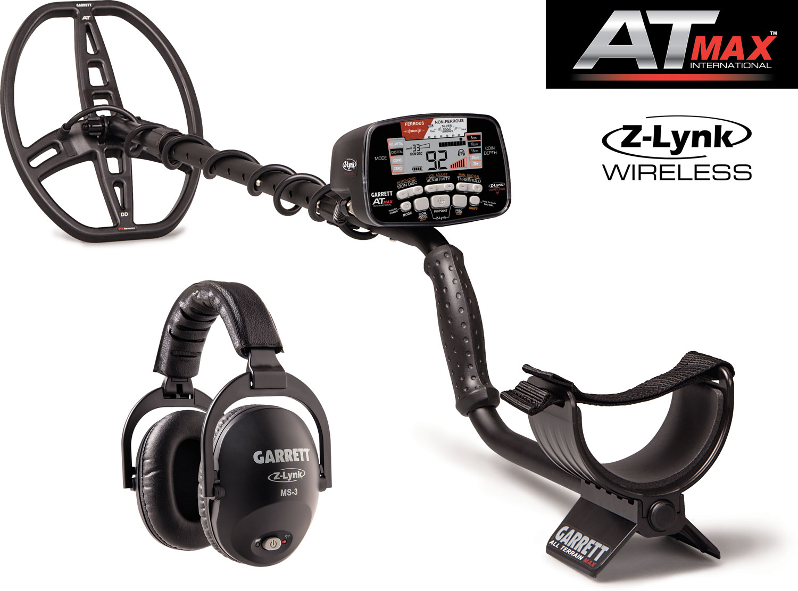
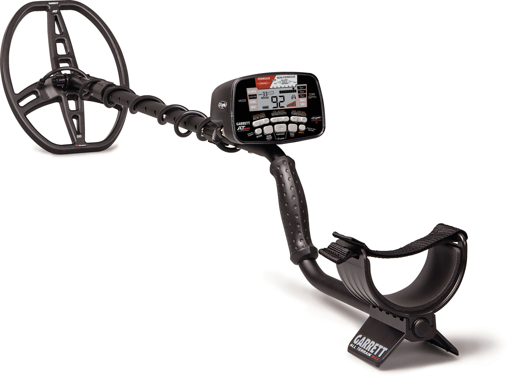

Ampliar




Mais Vendido
Oferta
Garrett
AT Max
O ápice da linha AT — wireless Z-Lynk integrado com latência de 1ms, frequência universal de 13,6 kHz e submersão total até 3 metros para uso profissional.
Frequência: 13,6 kHz
Submersão: até 3 metros
Wireless: Z-Lynk integrado
Bateria: 4x AA (35h)
Bobina: 8,5" × 11" DD PROformance
De R$ 5.380
R$ 3.413
ou 12x de R$ 284,42 sem juros